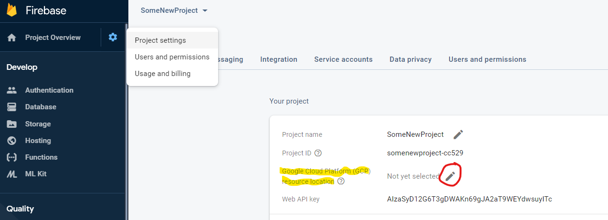
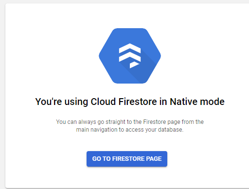
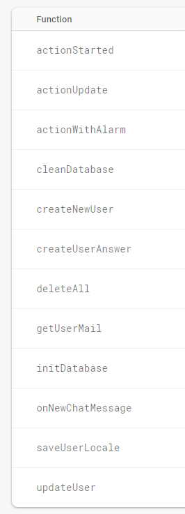

System components summary
System is powered by following components:
- Firestore database
- Firebase Authentication
- Firebase cloud functions
- Web app written in Flutter
- Mobile app written in Flutter
Following doc aims to create your own environment for app
Requirements for building
- Flutter
- Android Studio
- for iOS builds: XCode
- for convinient editing cloud functions Visual Code
Setup of environment
- Go to https://console.firebase.google.com/
- Create new Firebase project
- Click on Project Settings in upper-left corner. Choose resource localization for Google Cloud Platform (note: if you don’t select any option there, the deploy will fail).

- Go to Programming -> Database (left panel) and create new database. Then go to https://console.cloud.google.com/ , select your project from dropdown. Then from Navigation menu on left go to Datastore section and make sure that Firestore is using native mode (if it’s in datastorage then switch to native mode).

Setup geoLocation API
For geocoding feature in app we are using https://locationiq.com/ . You can use it also - after creating account paste received token into config.json . However if you would like to use another geocoding service modify LocationRepository class according to your requirments
Download required components
- From repo http://cloud_functions_url.com obtain code for cloud functions
- From repo http://web_app.com obtain code for web application
- From repo http://mobile_app.com obtain code for mobile application
Prepare cloud functions (backend)
On firebase console go to Programming -> Functions. You will find instruction on how to install Firebase Function CLI on your computer, please follow them to initiate cloud functions in folder where you have cloned Cloud functions repo
Make sure you have owner acess for created Firebase project
Deploy cloud functions following instructions from google
In Firebase Console go to Programming -> Functions and make sure everything was deployed correctly

Prepare database
In previous screen read URL on right side of function named initDatabase. Using your favourite REST client (e.g. Postman or Insomnia) make POST request with json body to read URL:
https://<your-project>.cloudfunctions.net/initDatabase
{
"email" : "mail@mail.com",
"password": "password",
"userName": "UserName"
}
This request will create your “superuser” with data given in payload, for first login to admin panel and some required documents for app to work
Prepare web app
To prepare your environment for building and running web app please follow https://flutter.dev/docs/get-started/web
- In Firebase project settings create Web app. After creating it, you will see various properties (like appID) that will be nececeary for later steps.
- Go to RescWeb repository and modify file keys.dart with values taken from step 1. If you’re adding new environment then modify config.dart as well, also add new main_xyz.dart file where xyz is your shortcut for environment named
- To build the web app run flutter build web -t lib/main_xyz.dart
- Once application is built then it needs to be deployed. Go to build/web folder and run firebase init
- Select Hosting, then select public folder and choose single-page app
- Copy everything from build/web into public (a subfolder), replace index.html
- Run command firebase deploy
- In order to login to web app you need to enable e-mail authentication first. Go to Firebase -> Authentication -> Sign-in method and enable e-mail/password
Prepare users
After you are ready to go with web app create some user with “coordinator” rights to be able to work in app. Account you have created during Preparing database step should be used only for maintance, because functions for clearing database are not secured before accident tapping.
Prepare mobile app
Flutter part: Create config.json file in assets folder with following body:
{
"dev_url": "https://<your-project>.cloudfunctions.net",
"qa_url": "https://<your-project>.cloudfunctions.net",
"prod_url": "https://<your-project>.cloudfunctions.net",
"geoLoc_url": "https://eu1.locationiq.com/v1",
"geoLoc_token": "API_TOKEN for locationiq"
}

Android part In Firebase create Android app and download google_services json Paste it into android/app/src/development/google-services.json (also into src/qa and src/production to avoid parsing errors) iOS part: In Firebase create iOS app and download GoogleService-Info.plist Paste it into ios/Runner/ as GoogleService-Info-Dev.plist (and *-Prod and *-QA) - naming is important
After this you should be able to build your mobile app as:
flutter build apk --flavor development --target lib/main_dev.dart
flutter build ios --flavor development --target lib/main_dev.dart